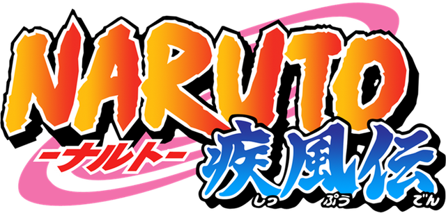
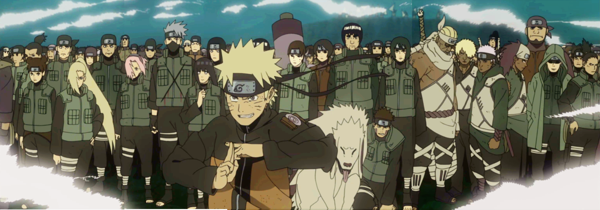

|  | Home | Quem somos | Contato |
|  | |
Sobre o NarutoO Naruto pode ser um pouco duro às vezes, talvez você não saiba disso, mas o Naruto também cresceu sem pai. Na verdade ele nunca conheceu nenhum de seus pais, e nunca teve nenhum amigo em nossa aldeia. Mesmo assim eu nunca vi ele chorar, ficar zangado ou se dar por vencido, ele está sempre disposto a melhorar, ele quer ser respeitado, é o sonho dele e o Naruto daria a vida por isso sem hesitar. Meu palpite é que ele se cansou de chorar e decidiu fazer alguma coisa a respeito! Mas o único que ele não conseguiu matar... foi o irmão. Um homem que chorou lágrimas de sangue, que teve que jogar fora as emoções para matar todos os seus parentes e amigos... Não teve coragem de te matar. Você entende o que isso significa? Se eu não poder usar meus braços, vou usar minhas pernas. Se eu não poder minha pernas, vou usar minha cabeça. Se eu não poder usar minha cabeça, vou olhá-lo fixamente. E se eu estiver cego, então vou gritar até o destruir. Não importa o quanto ele possa lutar contra mim, eu vou vencer Orochimaru e buscar meu amigo Sasuke de volta de UMA VEZ POR TODAS! |
|
Naruto é melhor que o goku |
|